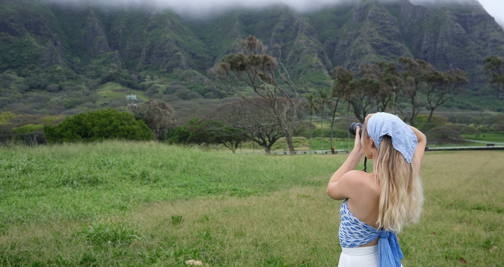
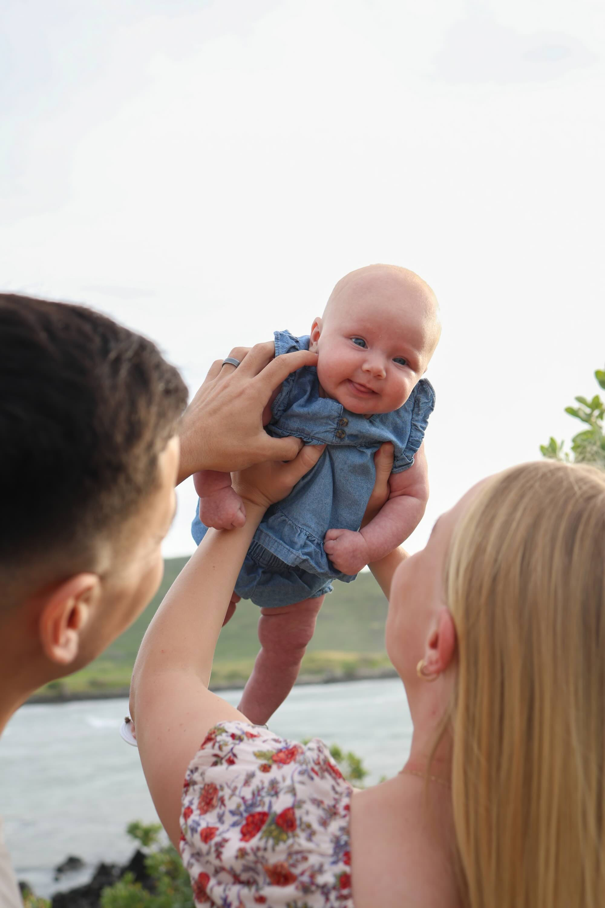
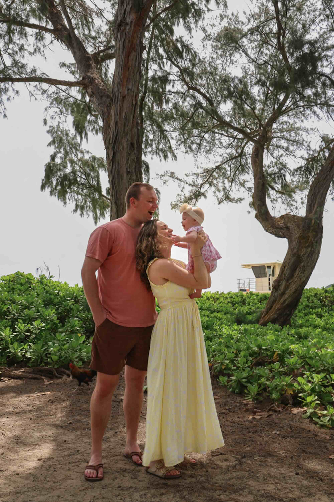
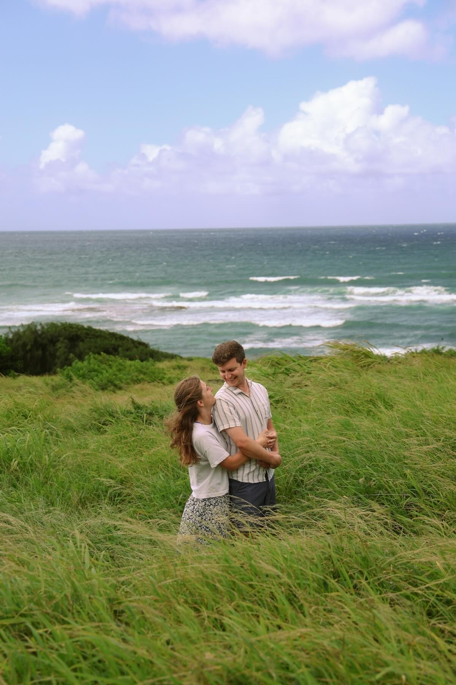
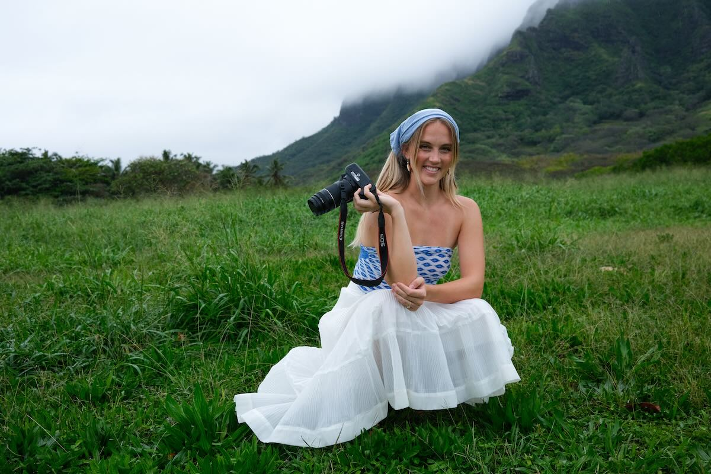
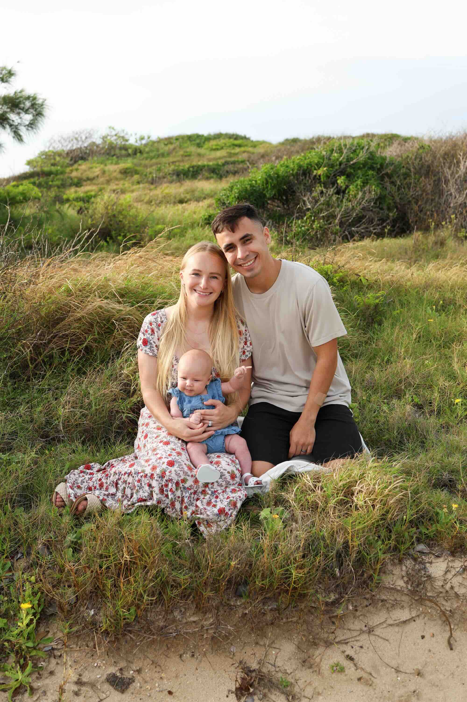
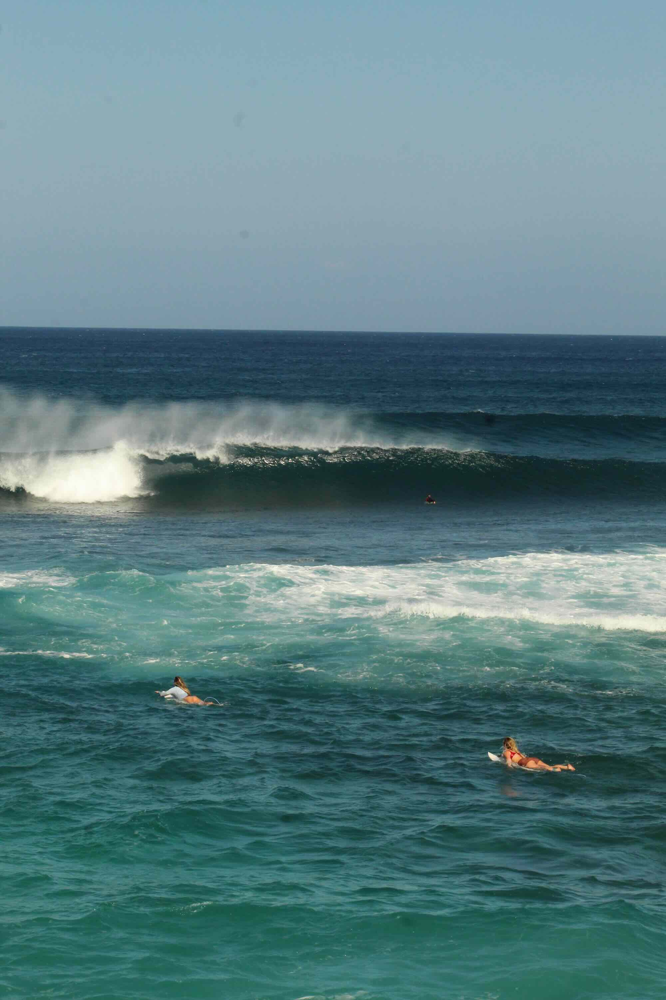

motion made art.
LOCATED IN OAHU, HAWAII
Authentic, joy-filled moments for couples and families who love deeply. Oahu-based photographer capturing the real connection between you and the people who matter most.
Portfolio — Couples, Families & Portraits in Oahu




Meet Paige
Oahu Photographer and Artist
If you’re looking for photos that feel natural, joyful, and completely like you—you’re in the right place. I specialize in capturing couples, families, and growing families in a relaxed way that lets you focus on being present with the people you love. I'm based in Oahu, Hawaii, but I'm willing to travel anywhere. I'm just a simple, life-and-people-lovin' girl—kind, creative, and an old soul, and I can't wait to meet you!
About Me
What to Expect


I love photographing people and the moments that show who they really are. My approach is documentary and candid, which means I'm not trying to force perfect poses. Instead, I focus on letting moments unfold naturally so your personality, connection, and story can come through in an honest way.
Getting to know my clients is one of my favorite parts of the process. Every couple, family, and person I photograph brings something unique, and I want your photos to reflect that. I try to create a calm, comfortable space where you can just be yourselves—laugh, move around, and enjoy the moment together.
My style leans warm, cinematic, and authentic. I'm drawn to the little in-between moments: a quiet glance, a laugh you didn't expect, the way two people naturally lean toward each other.
My faith shapes the way I approach my work. I believe the most meaningful photos often come from the simple, genuine moments that show love, connection, and grace. My goal is to capture images that feel true to you and tell your story in a way that lasts.
Kind Words From Clients
Spreading God's love through photos of His creation
Book Now